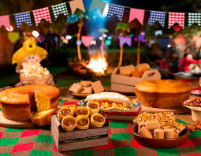
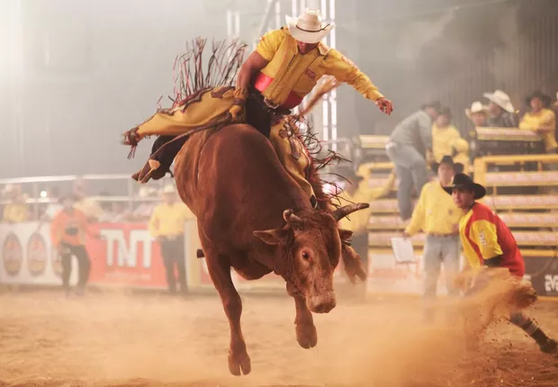
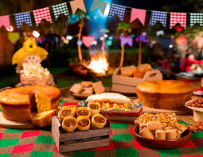
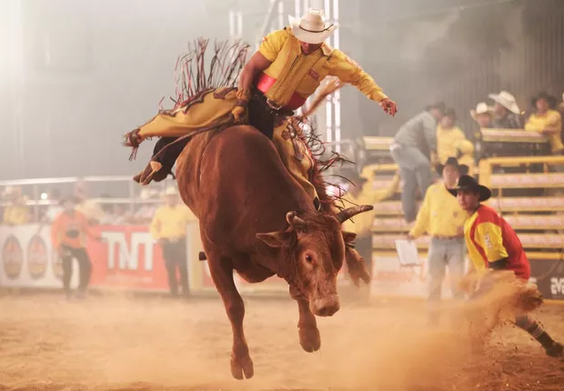
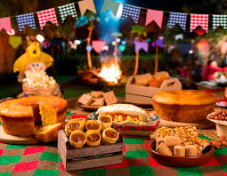
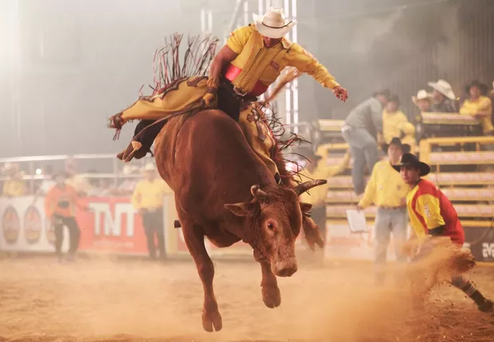

Explore como o campo e a cidade celebram suas festas: do forró à avenida, da colheita ao carnaval.
Celebradas com simplicidade e união: quadrilha, fogueira, comidas típicas e música sertaneja.


Grandes eventos com luzes, desfiles, tecnologia e pluralidade cultural, como o carnaval e festivais.